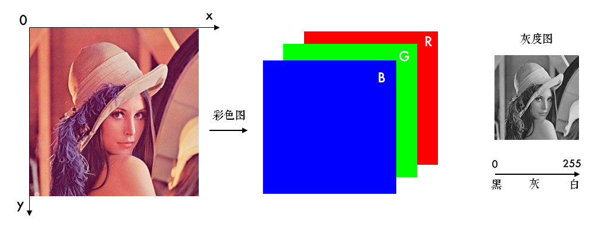

图片与视频的基础操作
前言
18年结束毕业设计之后，对OpenCV接触很少了。那时使用的是C++，借由最近使用python较多，学习OpenCV-python算是一种温故。本文主要参考了OpenCV-Python图像处理教程以及官方文档。
图片
需要注意图片的x，y轴排布，三通道以B-G-R排布，灰度图只有一个通道。

读取
# 加载灰度图
img = cv2.imread('lena.jpg', 0)
- 参数1：图片的文件名
- 如果图片放在当前文件夹下，直接写文件名就行了，如’lena.jpg’
- 否则需要给出绝对路径，如’D:\OpenCVSamples\lena.jpg’
- 参数2：读入方式，省略即采用默认值
cv2.IMREAD_COLOR：彩色图，默认值(1)cv2.IMREAD_GRAYSCALE：灰度图(0)cv2.IMREAD_UNCHANGED：包含透明通道的彩色图(-1)
显示
# 创建窗口
cv2.namedWindow('lena2', cv2.WINDOW_NORMAL)
- 参数1：窗口名称
- 参数2：窗口模式
cv2.WINDOW_AUTOSIZE表示窗口大小自适应图片cv2.WINDOW_NORMAL表示窗口大小可调整
# 显示图片
cv2.imshow('lena', img)
- 参数1：窗口名称
- 参数2：图片实例
# 保持图片显示
cv2.waitKey(0)
参数：暂停时长，ms
为0时，表示无限长。
传回按键的ascii码, 如
ESC:27、s:115
保存
# 保存图片
cv2.imwrite('lena_gray.jpg', img)
- 参数1：是包含后缀名的文件名
if cv2.waitKey(10000) == 115:
cv2.imwrite('lena_gray.jpg', img)
- 显示10秒，当按下
s时，保存图片
if cv2.waitKey(10000) == ord('q'):
cv2.imwrite('lena_gray.jpg', img)
- 也可以用
ord()，按下q时，保存。
处理
OpenCV中很多简单的操作实际上是NumPy的操作，请参照第四篇。
像素
px = img[y, x]
- 先输入行，再输入列
- 对于彩色图像会返回依次为B-G-R三个通道的值组成的列表，例如
[100, 110, 120] - 对于灰度图或者单通道图，只有一个值。例如
100
px_blue = img[y, x, 0]
px_green = img[y, x, 1]
px_red = img[y, x, 2]
- 获取单通道值
属性
形状
# 彩色图像，返回一个包含行数（高度）、列数（宽度）和通道数的元组
height, width, channels = img.shape
# 灰度图，返回行数和列数的元组
height, width = img.shape
数据类型
img.dtype
实际上img.dtype现实的是图像的深度depth，C++中type包含图像深度depth（低三位）和通道数channel（高三位）。channel可以是1，2，3，n。depth有以下可选：
// <interface.h>
#define CV_8U 0
#define CV_8S 1
#define CV_16U 2
#define CV_16S 3
#define CV_32S 4
#define CV_32F 5
#define CV_64F 6
#define CV_16F 7
- 数字表示一个像素占几位内存，
U表示unsigned，S表示signed，F表示float
ROI (Region of Interest)
# 截取ROI
roi = img[100:200, 200:300]
- 直接指定范围即可，上面表示行数为
100-200，列数为200-300的区域
通道分割和合并
# 分割
b, g, r = cv2.split(img)
# 合并
img = cv2.merge((b, g, r))
split()函数比较耗时，更高效的方式是用numpy中的索引，如提取B通道：
b = img[:, :, 0]
颜色空间转换
# 转换图片类型
cv2.cvtColor(frame, cv2.COLOR_BGR2GRAY)
- 参数2：cv2.cvtColor()
- 颜色转换其实是数学运算，如灰度化最常用的是：
gray=R*0.299+G*0.587+B*0.114
几何变换
缩放
# 按照指定的宽度、高度缩放图片
res = cv2.resize(img, (132, 150))
- 参数2：顺序是宽度，高度；并非
.shape中高度，宽度，通道的顺序
# 按照比例缩放，如x,y轴均放大一倍
res2 = cv2.resize(img, None, fx=2, fy=2, interpolation=cv2.INTER_LINEAR)
interpolation，插值方法，默认是INTER_LINEAR，InterpolationFlags：
| Enumerator | |
|---|---|
| INTER_NEAREST Python: cv.INTER_NEAREST | nearest neighbor interpolation |
| INTER_LINEAR Python: cv.INTER_LINEAR | bilinear interpolation |
| INTER_CUBIC Python: cv.INTER_CUBIC | bicubic interpolation |
| INTER_AREA Python: cv.INTER_AREA | resampling using pixel area relation. It may be a preferred method for image decimation, as it gives moire’-free results. But when the image is zoomed, it is similar to the INTER_NEAREST method. |
| INTER_LANCZOS4 Python: cv.INTER_LANCZOS4 | Lanczos interpolation over 8x8 neighborhood |
| INTER_LINEAR_EXACT Python: cv.INTER_LINEAR_EXACT | Bit exact bilinear interpolation |
| INTER_MAX Python: cv.INTER_MAX | mask for interpolation codes |
| WARP_FILL_OUTLIERS Python: cv.WARP_FILL_OUTLIERS | flag, fills all of the destination image pixels. If some of them correspond to outliers in the source image, they are set to zero |
| WARP_INVERSE_MAP Python: cv.WARP_INVERSE_MAP | flag, inverse transformationFor example, linearPolar or logPolar transforms:flag is not set: dst(ρ,ϕ)=src(x,y)flag is set: |
翻转
dst = cv2.flip(img, 1)
- 参数2 = 0：垂直翻转(沿x轴)，参数2 > 0: 水平翻转(沿y轴)，参数2 < 0: 水平垂直翻转。
平移
# 平移图片
import numpy as np
rows, cols = img.shape[:2]
# 定义平移矩阵，需要是numpy的float32类型
# x轴平移100，y轴平移50
M = np.float32([[1, 0, 100], [0, 1, 50]])
# 用仿射变换实现平移
dst = cv2.warpAffine(img, M, (cols, rows))
cv2.imshow('shift', dst)
cv2.waitKey(0)
M实际上是仿射矩阵)去除了最后一行，由矩阵A和向量b组成，由于只做平移，A = [[1, 0], [0, 1]]
旋转
平移相当于旋转的一种特例，但是由于仿射变换比较复杂，一般直接找很难找到这个矩阵，OpenCV提供了根据变换前后三个点的对应关系来自动求解，M=cv2.getAffineTransform(pos1,pos2)，其中两个位置就是变换前后的对应位置关系。输出的就是仿射矩阵M。然后再使用函数cv2.warpAffine()。
from matplotlib import pyplot as plt
import cv2
import numpy as np
img = cv2.imread('aier.jpg')
rows,cols = img.shape[:2]
pts1 = np.float32([[50,50],[200,50],[50,200]])
pts2 = np.float32([[10,100],[200,20],[100,250]])
M = cv2.getAffineTransform(pts1,pts2)
#第三个参数：变换后的图像大小
res = cv2.warpAffine(img,M,(rows,cols))
plt.subplot(121)
plt.imshow(img[:,:,::-1])
plt.subplot(122)
plt.imshow(res[:,:,::-1])
plt.show()
如果仅作旋转和缩放，可以使用 cv2.getRotationMatrix2D()函数来生成这个矩阵，该函数有三个参数：
- 参数1：图片的旋转中心
- 参数2：旋转角度(正：逆时针，负：顺时针)
- 参数3：缩放比例，0.5表示缩小一半
# 45°旋转图片并缩小一半
M = cv2.getRotationMatrix2D((cols / 2, rows / 2), 45, 0.5)
dst = cv2.warpAffine(img, M, (cols, rows))
cv2.imshow('rotation', dst)
cv2.waitKey(0)
关于仿射和透视请参照这里
视频
摄像头
# 打开摄像头
capture = cv2.VideoCapture(0)
- 参数：摄像头的编号
capture相当于创建的VideoCapture对象
# 获取摄像头画面
ret, frame = capture.read()
- 返回值
ret：布尔值，表示当前这一帧是否获取正确 - 返回值
frame：一帧图像
# 获取摄像头的一些属性，比如捕获的分辨率，亮度和对比度等
cap.get(propId)
# 修改属性值
cap.set(propId,value)
propId是0~18的数字，代表不同的属性，完整的属性列表：
CV_CAP_PROP_POS_MSEC: Current position of the video file in milliseconds.CV_CAP_PROP_POS_FRAMES: 0-based index of the frame to be decoded/captured next.CV_CAP_PROP_POS_AVI_RATIO: Relative position of the video file: 0 - start of the film, 1 - end of the film.CV_CAP_PROP_FRAME_WIDTH: Width of the frames in the video stream.CV_CAP_PROP_FRAME_HEIGHT: Height of the frames in the video stream.CV_CAP_PROP_FPS: Frame rate.CV_CAP_PROP_FOURCC: 4-character code of codec.CV_CAP_PROP_FRAME_COUNT: Number of frames in the video file.CV_CAP_PROP_FORMAT: Format of the Mat objects returned by retrieve() .CV_CAP_PROP_MODE: Backend-specific value indicating the current capture mode.CV_CAP_PROP_BRIGHTNESS: Brightness of the image (only for cameras).CV_CAP_PROP_CONTRAST: Contrast of the image (only for cameras).CV_CAP_PROP_SATURATION: Saturation of the image (only for cameras).CV_CAP_PROP_HUE: Hue of the image (only for cameras).CV_CAP_PROP_GAIN: Gain of the image (only for cameras).CV_CAP_PROP_EXPOSURE: Exposure (only for cameras).CV_CAP_PROP_CONVERT_RGB: Boolean flags indicating whether images should be converted to RGB.CV_CAP_PROP_WHITE_BALANCE: Currently unsupportedCV_CAP_PROP_RECTIFICATION: Rectification flag for stereo cameras (note: only supported by DC1394 v 2.x backend cur- rently)
本地视频
# 播放本地视频
capture = cv2.VideoCapture('demo_video.mp4')
while(capture.isOpened()):
ret, frame = capture.read()
gray = cv2.cvtColor(frame, cv2.COLOR_BGR2GRAY)
cv2.imshow('frame', gray)
if cv2.waitKey(30) == ord('q'):
break
录制视频
capture = cv2.VideoCapture(0)
# 定义编码方式并创建VideoWriter对象
fourcc = cv2.VideoWriter_fourcc(*'MJPG')
outfile = cv2.VideoWriter('output.avi', fourcc, 25., (640, 480))
while(capture.isOpened()):
ret, frame = capture.read()
if ret:
outfile.write(frame) # 写入文件
cv2.imshow('frame', frame)
if cv2.waitKey(1) == ord('q'):
break
else:
break
- 创建一个
VideoWriter的对象，需要给它传入四个参数：- 输出的文件名，如’output.avi’
- 编码方式FourCC码：Video Codecs
- 帧率FPS
- 要保存的分辨率大小
视频处理
特定颜色物体追踪
HSV是一个常用于颜色识别的模型，相比BGR更易区分颜色，转换模式用COLOR_BGR2HSV表示。
OpenCV中色调H范围为[0,179]，饱和度S是[0,255]，明度V是[0,255]。虽然H的理论数值是0°~360°，但8位图像像素点的最大值是255，所以OpenCV中除以了2，某些软件可能使用不同的尺度表示，所以同其他软件混用时，记得归一化。
使用HSV来只显示视频中蓝色物体的例子，步骤如下：
- 捕获视频中的一帧
- 从BGR转换到HSV
- 提取蓝色范围的物体
- 只显示蓝色物体
import cv2
import numpy as np
capture = cv2.VideoCapture(0)
# 蓝色的范围，不同光照条件下不一样，可灵活调整
lower_blue = np.array([100, 100, 100])
upper_blue = np.array([130, 255, 255])
while(True):
# 1.捕获视频中的一帧
ret, frame = capture.read()
# 2.从BGR转换到HSV
hsv = cv2.cvtColor(frame, cv2.COLOR_BGR2HSV)
# 3.inRange()：介于lower/upper之间的为白色，其余黑色
mask = cv2.inRange(hsv, lower_blue, upper_blue)
# 4.只保留原图中的蓝色部分
res = cv2.bitwise_and(frame, frame, mask=mask)
cv2.imshow('frame', frame)
cv2.imshow('mask', mask)
cv2.imshow('res', res)
if cv2.waitKey(1) == ord('q'):
break
我房间比较暗，调低了点lower_blue中的饱和度和亮度，哆啦A梦如图：

滑动条
# 创建一个名为test的窗口
cv2.namedWindow('test')
# 创建一个滑动条
cv2.createTrackbar('R', 'test', 0, 255, nothing)
- 参数1：滑动条的名称
- 参数2：所在窗口的名称
- 参数3：当前的值
- 参数4：最大值
- 参数5：回调函数名称，回调函数默认有一个表示当前值的参数
创建好之后，可以在回调函数中获取滑动条的值，也可以用cv2.getTrackbarPos()得到：
r = cv2.getTrackbarPos('R', 'test')
- 参数1是滑动条的名称
- 参数2是窗口的名称。
参考
- https://github.com/ex2tron/OpenCV-Python-Tutorial
- https://blog.csdn.net/m0_37167788/article/details/78603307
本博客所有文章除特别声明外，均采用 CC BY-SA 3.0协议 。转载请注明出处！